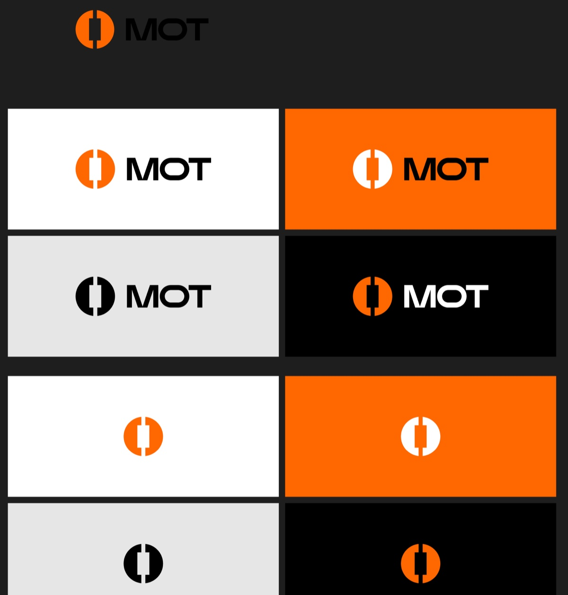
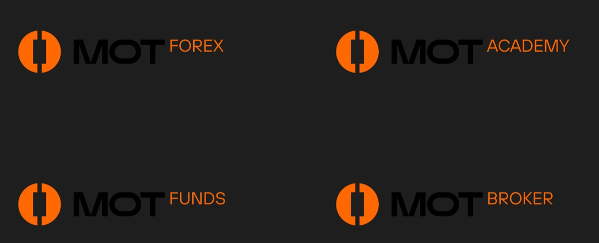
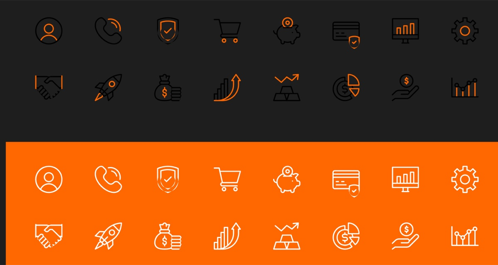
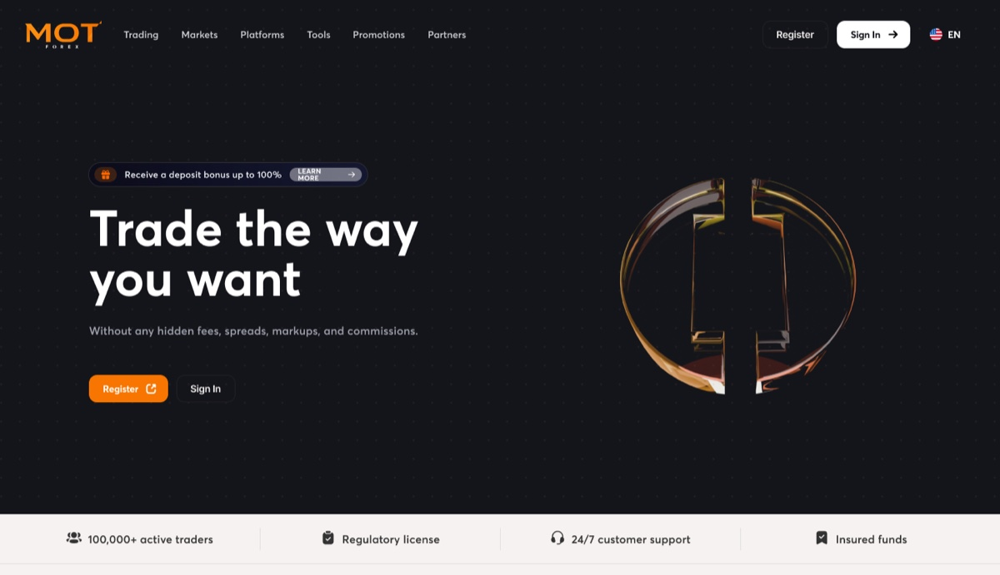
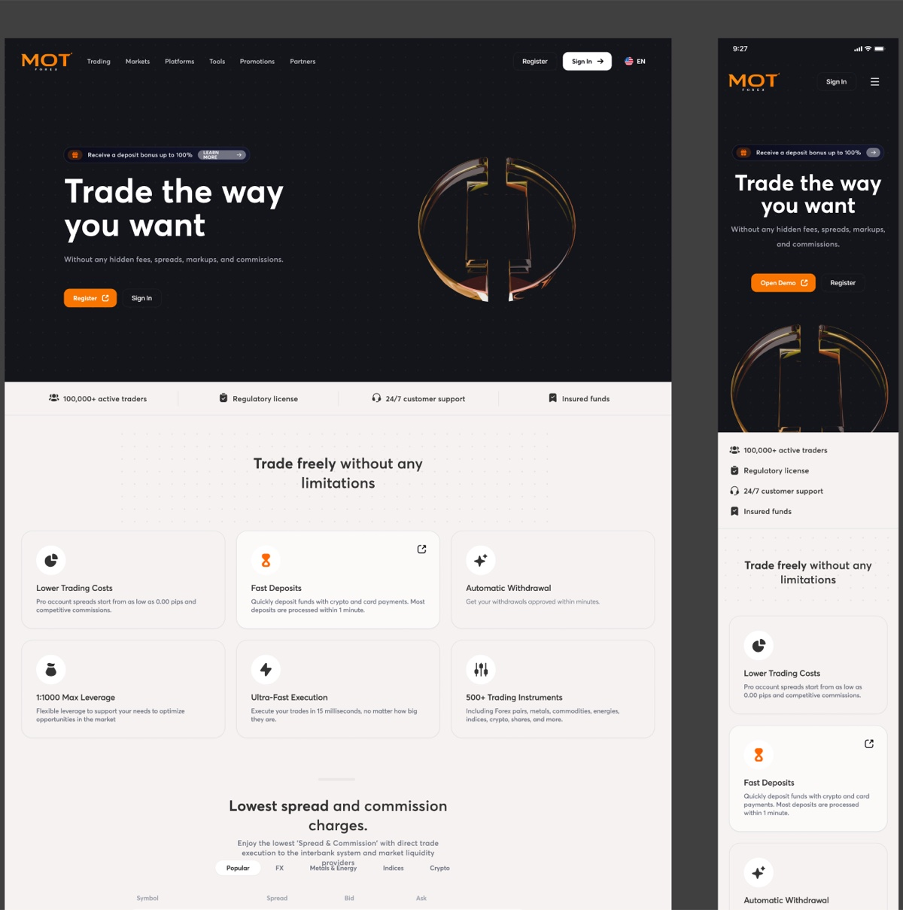
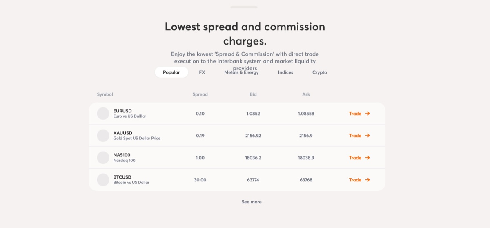
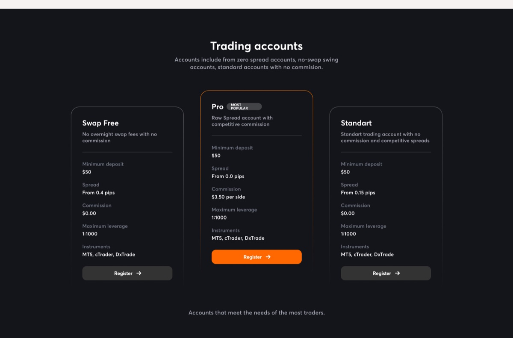

MOT landing page
2024
MOT is a Mongolian financial group with four divisions. I built the brand for all four and the landing page for one: MOT Forex, a retail broker whose entire pitch is spreads, leverage and how fast an order fills. A year later I took another division to market as iTrader.
One mark, four businesses
I drew the mark as a circle cut by a vertical bar with a notch above and below it. Read one way it is a candlestick, the most legible object in this industry. Read the other way it is a pair of brackets holding an empty middle, and I wanted both readings available.

I held it to three colours.
I specified the orange as a Pantone as well as a hex, because I knew this brand would end up on cards, banners and sponsored shirts and not only on screens. A brand that only renders needs a hex. This one needed an ink.

All four divisions share the mark. I kept the name at the same weight and the same black in every lockup and let only the division change, in orange. That is an endorsed system rather than a house of brands, and I chose it because the parent is the thing carrying the licence and the trust, so each division should read as MOT first.
Under that I built a secondary palette of eight and drew sixteen icons in two treatments: two-tone on dark, and a single weight reversed out of the orange.

Trade the way you want

I led with Trade the way you want, and put the thing the customer is actually shopping for directly under it: no hidden fees, spreads, markups or commissions. The mark comes back as a piece of amber glass, and I kept that as the only decorative moment on the page.
Directly under the hero, before any feature, I put a bar of four claims. A hundred thousand active traders, a regulatory licence, support around the clock, insured funds. For a broker in a small market I wanted to answer the question the visitor arrived with, which is not what does it cost but who are you.

Numbers that move while you read

This is a marketing page publishing live prices. I set spread, bid and ask for four instruments, with tabs across the asset classes and a Trade link on every row.
That changed what the section had to be. A brochure can set numbers as pictures. I could not, because these numbers move every second and a stale bid on a broker’s home page is worse than no bid at all. So I set the figures in tabular numerals, sized the columns to hold when a price gains a digit, and ended every row in an action, which turns the section from a claim about cheapness into somewhere you can act on it.
Three accounts, one deposit

Swap Free, Pro, Standart. Every one takes $50 to open, every one runs at 1:1000, every one works on MT5, cTrader and DxTrade. Only two rows move. Swap Free is 0.4 pips and no commission, Pro is 0.0 pips and $3.50 a side, Standart is 0.15 pips and no commission.
So I decided the cards’ job was not to describe three products. It was to make one trade-off findable: a tighter spread you pay a commission for, against a wider spread you do not.
Three cards that agree on five rows out of seven are telling you which two rows to read.
I lifted Pro, outlined it in the brand orange, tagged it Most Popular and gave it the only filled button of the three, so the layout does the recommending and the copy does not have to. I kept the other rows repeating identically down all three cards on purpose. That repetition is what makes the two differing rows visible at all.
84.01%
The footer carries the part I had to design without anyone expecting me to enjoy it. CFDs are complex instruments and come with a high risk of losing money rapidly due to leverage, and 84.01% of retail investor accounts lose money trading them. MOT Forex does not serve residents of the United States, Iran, North Korea and others. The company holds a Mongolian licence under register number 6960332 and complies with PCI DSS.
I met that same 84.01% again a year later on iTrader, because it is the same requirement and the same group, and designing around it twice taught me the same thing both times. The page has to sell and disclose inside one scroll, and I stopped treating the disclosure as something to minimise. It is what makes the hundred thousand traders and the regulatory licence at the top believable.
What happened next
In 2024 MOT Funds was one of four lockups on my brand sheet. By 2025 I had given it its own name, its own electric green and its own site, and it went to market as iTrader.
I did not let the orange disappear in the move. iTrader’s secondary palette carries a
swatch I named Orange MOT at exactly #FF6700, so the parent keeps a defined place
inside the child’s system rather than turning up unannounced.
The three account cards did not survive, and I did not try to save them. A broker sells three accounts that differ on one axis. A prop firm sells an account type, a stage count and a size, which multiply into twenty-eight different rulebooks, and three cards cannot hold that. I replaced them with a configurator with three dials, which is the same problem one year and one order of magnitude later.